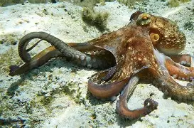

Os polvos têm três corações
Dois corações levam sangue para as branquias e um bombeia sangue para o resto do corpo

Polvos são muito inteligentes
Eles conseguem aprender e resolver problemas, além de guardarem algumas coisas na memória
O sangue dos polvos é azul
Isso acontece por causa de uma proteína chamada hemocianina, que ajuda a circular oxigenio no sangue